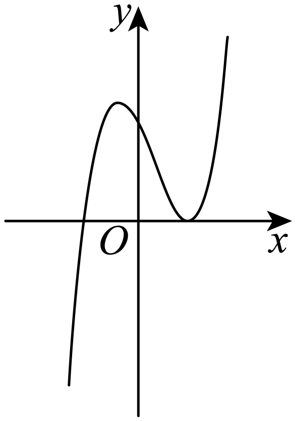
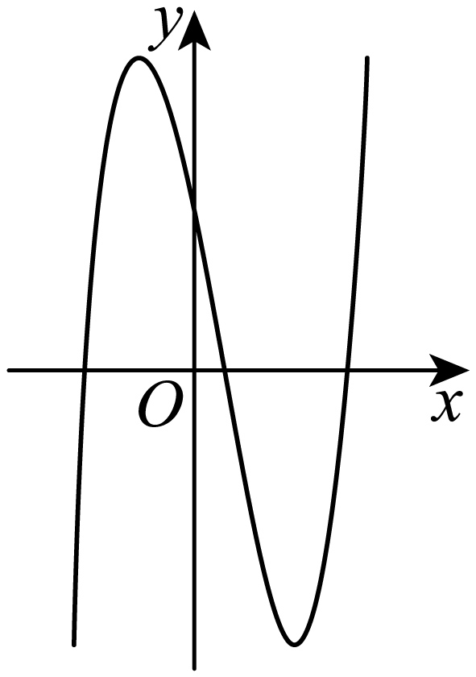
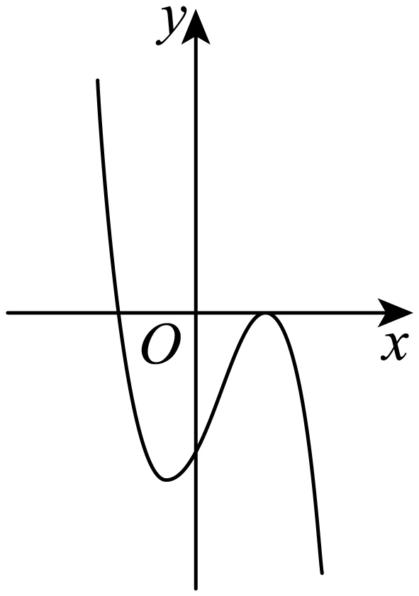
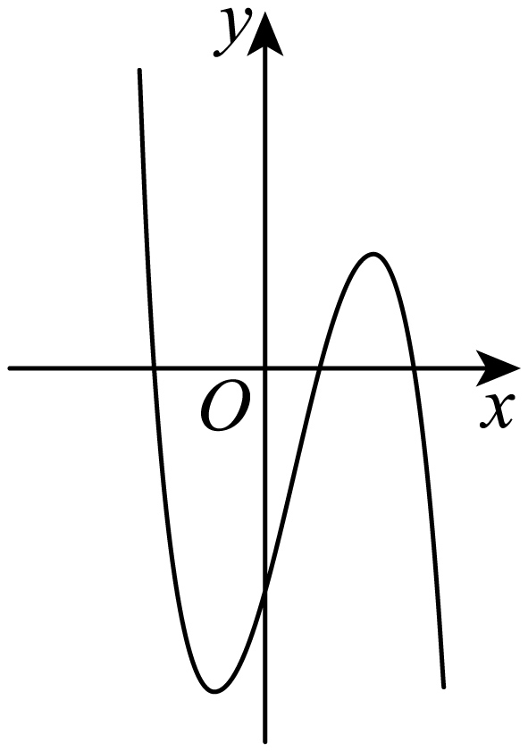

示例学校高二数学周测（5） Q5
题目
5． 已知函数f(x)在定义域内可导，f(x)的大致图象如图所示，则其导函数f^'(x)的大致图象可能为（ ）
A．

B．
C．
D．
答案与解析
5．B观察图象知，当x<0时，f(x)先单调递减，再单调递增，则f^'(x)先为负数，再为正数，在当x>0时，f(x)先单调递增，再单调递减，最后单调递增，所以f^'(x)先为正数，再为负数，最后为正数，故只有B符合.
结构化摘要
{
"question_id": "szzx2024g2week5_q005",
"answer": "B",
"assets": [
{
"id": "img001",
"type": "image",
"rel_id": "rId8",
"source": "word/media/image2.png",
"path": "assets/szzx2024g2week5_q005_image_01.png"
},
{
"id": "img002",
"type": "image",
"rel_id": "rId9",
"source": "word/media/image3.png",
"path": "assets/szzx2024g2week5_q005_image_02.png"
},
{
"id": "img003",
"type": "image",
"rel_id": "rId10",
"source": "word/media/image4.png",
"path": "assets/szzx2024g2week5_q005_image_03.png"
},
{
"id": "img004",
"type": "image",
"rel_id": "rId11",
"source": "word/media/image5.png",
"path": "assets/szzx2024g2week5_q005_image_04.png"
}
],
"ole_objects": [],
"extraction": {
"source_paragraph_range": [
12,
13
],
"solution_paragraph_range": [
8,
8
],
"formula_count": 9,
"image_count": 4,
"ole_count": 0,
"quality_flags": [
"contains_images",
"contains_omml"
]
}
}